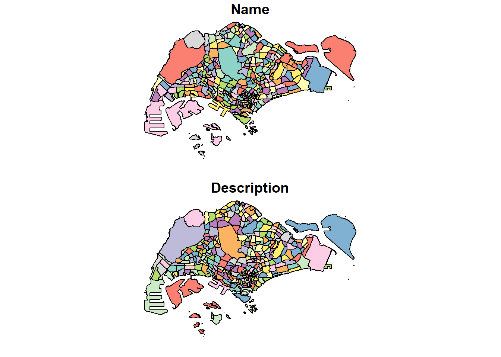

pacman::p_load(arrow, lubridate, tidyverse, sf, tmap)Take home Exercise 1: Application of Spatial Point Patterns Analysis to discover the geographical distribution of Grab hailing services in Singapore
rmb always check for duplicates
Objectives
Geospatial analytics hold tremendous potential to address complex problems facing society. In this study, you are tasked to apply appropriate spatial point patterns analysis methods to discover the geographical and spatio-temporal distribution of Grab hailing services locations in Singapore.
The Task
The specific tasks of this take-home exercise are as follows:
Using appropriate function of sf and tidyverse, preparing the following geospatial data layer in sf tibble data.frames:
Grab taxi location points either by origins or destinations.
Road layer within Singapore excluding outer islands.
Singapore boundary layer excluding outer islands
Using the extracted data, derive traditional Kernel Density Estimation layers. (Hands-on ex3:1st order)
Using the extracted data, derive either Network Kernel Density Estimation (NKDE) or Temporal Network Kernel Density Estimation (TNKDE)
Using appropriate tmap functions, display the kernel density layers on openstreetmap of Singapore.
Describe the spatial patterns revealed by the kernel density maps.
1. Import R packages
The different R packages used:
arrow exposes an interface to the Arrow C++ library, enabling access to many of its features in R. For this in-class exercise, arrow will be used to read Parquet files into R environment.
lubridate, a member of tidyverse family. Lubridate makes it easier to do the things R does with date-times and possible to do the things R does not. If you are new to lubridate, the best place to start is the Date and times chapter in R for data science.
tidyverse, a family of R packages for doing Data Science work based on tidy framework,
tmap, an R package specially designed for plotting cartographical quality maps based on Layered Gremmar of Graphics.
sf, an package that provides simple features access for R.
2. The Data
Apstial data
- For the purpose of this assignment, Grab-Posisi of Singapore will be used.
Geospatial data
Road data set from OpenStreetMap of Geofabrik download server. The Malaysia, Singapore, and Brunei coverage should be downloaded.
Master Plan 2019 Subzone Boundary (No Sea) from Data.gov.sg.
3. Data preprocessing
3.1 Importing Aspatial Data
Importing Grab-Posisi Dataset
In this case we use arrow package read_parquet() function to import the following dataset.
grab <- read_parquet("data/apstial/GrabPosisi/part-00000.parquet")Now we will use glimpse() of dplyr package is used to display the structure of df tibble data.frame.
glimpse(grab)Rows: 3,034,553
Columns: 9
$ trj_id <chr> "70014", "73573", "75567", "1410", "4354", "32630", "646…
$ driving_mode <chr> "car", "car", "car", "car", "car", "car", "car", "car", …
$ osname <chr> "android", "android", "android", "android", "android", "…
$ pingtimestamp <int> 1554943236, 1555582623, 1555141026, 1555731693, 15555844…
$ rawlat <dbl> 1.342326, 1.321781, 1.327088, 1.262482, 1.283799, 1.3003…
$ rawlng <dbl> 103.8890, 103.8564, 103.8613, 103.8238, 103.8072, 103.90…
$ speed <dbl> 18.910000, 17.719076, 14.021548, 13.026521, 14.812943, 2…
$ bearing <int> 248, 44, 34, 181, 93, 73, 82, 321, 324, 31, 203, 50, 252…
$ accuracy <dbl> 3.900, 4.000, 3.900, 4.000, 3.900, 3.900, 3.000, 3.649, …Notice that pingtimestamp is in wrong data type format. It should be in date/ time format and not integer.
3.2 Importing Geospatial data
Importing data for Road data from OpenStreetMap
In this case we will only be using road data?? ** To ask if we need road data or Bus or Mrt Only???
road <- st_read(dsn = "data/geospatial", layer = "gis_osm_roads_free_1")Reading layer `gis_osm_roads_free_1' from data source
`C:\Feliciaeng29\IS415-GAA\Take-home_Ex\Take-home_Ex01\data\geospatial'
using driver `ESRI Shapefile'
Simple feature collection with 1759836 features and 10 fields
Geometry type: LINESTRING
Dimension: XY
Bounding box: xmin: 99.66041 ymin: 0.8021131 xmax: 119.2601 ymax: 7.514393
Geodetic CRS: WGS 84Selecting and cleaning relevant information
For more example: https://jenpoer-is415-gaa-exercises.netlify.app/take-home-exercises/exe-01/the1
Explain the reason why as well might need to filter the openstreet map data to only Singapore
glimpse(road)Rows: 1,759,836
Columns: 11
$ osm_id <chr> "4386520", "4578273", "4579495", "4579533", "4579534", "45795…
$ code <int> 5113, 5114, 5122, 5122, 5122, 5122, 5141, 5122, 5122, 5122, 5…
$ fclass <chr> "primary", "secondary", "residential", "residential", "reside…
$ name <chr> "Orchard Road", "Jalan Bukit Bintang", "Jalan Nagasari", "Per…
$ ref <chr> NA, NA, NA, NA, NA, NA, NA, NA, NA, NA, NA, NA, NA, NA, NA, N…
$ oneway <chr> "F", "F", "B", "B", "B", "F", "F", "F", "F", "F", "B", "B", "…
$ maxspeed <int> 50, 0, 0, 0, 0, 0, 0, 0, 0, 0, 0, 0, 0, 0, 0, 0, 0, 50, 0, 0,…
$ layer <dbl> 0, 0, 0, 0, 0, 0, -1, 0, 0, 0, 0, 0, 0, 0, 0, 0, 0, 0, 0, 0, …
$ bridge <chr> "F", "F", "F", "F", "F", "F", "F", "F", "F", "F", "F", "F", "…
$ tunnel <chr> "F", "F", "F", "F", "F", "F", "T", "F", "F", "F", "F", "F", "…
$ geometry <LINESTRING [°]> LINESTRING (103.8301 1.3060..., LINESTRING (101.72…Importing Master Plan 2019 Subzone Boundary (No Sea) from Data.gov.sg.
mpsz = st_read("data/geospatial/MasterPlan2019SubzoneBoundaryNoSeaKML.kml")Reading layer `URA_MP19_SUBZONE_NO_SEA_PL' from data source
`C:\Feliciaeng29\IS415-GAA\Take-home_Ex\Take-home_Ex01\data\geospatial\MasterPlan2019SubzoneBoundaryNoSeaKML.kml'
using driver `KML'
Simple feature collection with 332 features and 2 fields
Geometry type: MULTIPOLYGON
Dimension: XY, XYZ
Bounding box: xmin: 103.6057 ymin: 1.158699 xmax: 104.0885 ymax: 1.470775
z_range: zmin: 0 zmax: 0
Geodetic CRS: WGS 84glimpse(mpsz)Rows: 332
Columns: 3
$ Name <chr> "kml_1", "kml_2", "kml_3", "kml_4", "kml_5", "kml_6", "kml…
$ Description <chr> "<center><table><tr><th colspan='2' align='center'><em>Att…
$ geometry <MULTIPOLYGON [°]> MULTIPOLYGON Z (((103.8145 ..., MULTIPOLYGON …Data preparation
Converting data type to date/time format
Since pingtimestamp is in wrong data type format, we need to convert the data type of pingtimestamp from character to date-time.
grab$pingtimestamp <- as_datetime(grab$pingtimestamp)Save the tidy data.frame into rds format for subsequent use. Save the reformatted df into a new rds file called part0.rds. Save the output into a sub-folder call rds.
write_rds(grab, "data/rds/part0.rds")Task 1: Grab taxi location points either by origins or destinations.
1.1 Extracting trips’ origin locations
origin_df <- grab %>%
group_by(trj_id) %>%
arrange(pingtimestamp) %>%
filter(row_number()==1) %>%
mutate(weekday = wday(pingtimestamp,
label=TRUE,
abbr=TRUE),
start_hr = factor(hour(pingtimestamp)),
day = factor(mday(pingtimestamp)))1.2 Extracting trips’ destination locations
destination_df <- grab %>%
group_by(trj_id) %>%
arrange(desc(pingtimestamp)) %>%
filter(row_number()==1) %>%
mutate(weekday = wday(pingtimestamp,
label=TRUE,
abbr=TRUE),
end_hr = factor(hour(pingtimestamp)),
day = factor(mday(pingtimestamp)))Saving data from future use
write_rds(origin_df, "data/rds/origin_df.rds")
write_rds(destination_df, "data/rds/destination_df.rds")Importing the origin and destination data
origin_df <- read_rds("data/rds/origin_df.rds")
destination_df <- read_rds("data/rds/destination_df.rds")4. Data Preprocessing
Aspatial Data
Convert Aspatial to Geospatial for GrabPosisi
Convert origin_df into an sf tibble data.frame by using it’s location information.
origin_sf <- st_as_sf(origin_df,
coords = c("rawlng", "rawlat"),
crs = 4326) %>%
st_transform(crs = 3414)destination_sf <- st_as_sf(destination_df,
coords = c("rawlng", "rawlat"),
crs = 4326) %>%
st_transform(crs = 3414)Visualising the data for Origin and Destination
Visualising frequency distribution
Use ggplot functions are used to reveal the distribution of origin trips by day of the week.
ggplot(data=origin_df,
aes(x=weekday)) +
geom_bar()
ggplot(data=destination_df,
aes(x=weekday)) +
geom_bar()
Visualising as Point Symbol Map
tmap_mode("plot")
tm_shape(origin_sf) +
tm_dots()
tmap_mode("plot")
tm_shape(destination_sf) +
tm_dots()
4.2 Project Transformation
First we can check the content of a simple feature data frame
Using st_geometry() The column in the sf data.frame that contains the geometries is a list, of class sfc. We can retrieve the geometry list-column.
st_geometry(mpsz)Geometry set for 332 features
Geometry type: MULTIPOLYGON
Dimension: XY, XYZ
Bounding box: xmin: 103.6057 ymin: 1.158699 xmax: 104.0885 ymax: 1.470775
z_range: zmin: 0 zmax: 0
Geodetic CRS: WGS 84
First 5 geometries:We can use this to double check if all the data is in projected coordinate system WGS84
Using glimpse() to find the basic feature information
glimpse(mpsz)Rows: 332
Columns: 3
$ Name <chr> "kml_1", "kml_2", "kml_3", "kml_4", "kml_5", "kml_6", "kml…
$ Description <chr> "<center><table><tr><th colspan='2' align='center'><em>Att…
$ geometry <MULTIPOLYGON [°]> MULTIPOLYGON Z (((103.8145 ..., MULTIPOLYGON …Now we would like to reveal complete information of a feature object using head() of Base R
head(mpsz, n=5)Simple feature collection with 5 features and 2 fields
Geometry type: MULTIPOLYGON
Dimension: XYZ
Bounding box: xmin: 103.8013 ymin: 1.274155 xmax: 103.8532 ymax: 1.286506
z_range: zmin: 0 zmax: 0
Geodetic CRS: WGS 84
Name
1 kml_1
2 kml_2
3 kml_3
4 kml_4
5 kml_5
Description
1 <center><table><tr><th colspan='2' align='center'><em>Attributes</em></th></tr><tr bgcolor="#E3E3F3"> <th>SUBZONE_NO</th> <td>12</td> </tr><tr bgcolor=""> <th>SUBZONE_N</th> <td>DEPOT ROAD</td> </tr><tr bgcolor="#E3E3F3"> <th>SUBZONE_C</th> <td>BMSZ12</td> </tr><tr bgcolor=""> <th>CA_IND</th> <td>N</td> </tr><tr bgcolor="#E3E3F3"> <th>PLN_AREA_N</th> <td>BUKIT MERAH</td> </tr><tr bgcolor=""> <th>PLN_AREA_C</th> <td>BM</td> </tr><tr bgcolor="#E3E3F3"> <th>REGION_N</th> <td>CENTRAL REGION</td> </tr><tr bgcolor=""> <th>REGION_C</th> <td>CR</td> </tr><tr bgcolor="#E3E3F3"> <th>INC_CRC</th> <td>C22DED671DE2A940</td> </tr><tr bgcolor=""> <th>FMEL_UPD_D</th> <td>20191223152313</td> </tr></table></center>
2 <center><table><tr><th colspan='2' align='center'><em>Attributes</em></th></tr><tr bgcolor="#E3E3F3"> <th>SUBZONE_NO</th> <td>2</td> </tr><tr bgcolor=""> <th>SUBZONE_N</th> <td>BUKIT MERAH</td> </tr><tr bgcolor="#E3E3F3"> <th>SUBZONE_C</th> <td>BMSZ02</td> </tr><tr bgcolor=""> <th>CA_IND</th> <td>N</td> </tr><tr bgcolor="#E3E3F3"> <th>PLN_AREA_N</th> <td>BUKIT MERAH</td> </tr><tr bgcolor=""> <th>PLN_AREA_C</th> <td>BM</td> </tr><tr bgcolor="#E3E3F3"> <th>REGION_N</th> <td>CENTRAL REGION</td> </tr><tr bgcolor=""> <th>REGION_C</th> <td>CR</td> </tr><tr bgcolor="#E3E3F3"> <th>INC_CRC</th> <td>085EF219A5A1AEAD</td> </tr><tr bgcolor=""> <th>FMEL_UPD_D</th> <td>20191223152313</td> </tr></table></center>
3 <center><table><tr><th colspan='2' align='center'><em>Attributes</em></th></tr><tr bgcolor="#E3E3F3"> <th>SUBZONE_NO</th> <td>3</td> </tr><tr bgcolor=""> <th>SUBZONE_N</th> <td>CHINATOWN</td> </tr><tr bgcolor="#E3E3F3"> <th>SUBZONE_C</th> <td>OTSZ03</td> </tr><tr bgcolor=""> <th>CA_IND</th> <td>Y</td> </tr><tr bgcolor="#E3E3F3"> <th>PLN_AREA_N</th> <td>OUTRAM</td> </tr><tr bgcolor=""> <th>PLN_AREA_C</th> <td>OT</td> </tr><tr bgcolor="#E3E3F3"> <th>REGION_N</th> <td>CENTRAL REGION</td> </tr><tr bgcolor=""> <th>REGION_C</th> <td>CR</td> </tr><tr bgcolor="#E3E3F3"> <th>INC_CRC</th> <td>EF2B9A91AF49E025</td> </tr><tr bgcolor=""> <th>FMEL_UPD_D</th> <td>20191223152313</td> </tr></table></center>
4 <center><table><tr><th colspan='2' align='center'><em>Attributes</em></th></tr><tr bgcolor="#E3E3F3"> <th>SUBZONE_NO</th> <td>4</td> </tr><tr bgcolor=""> <th>SUBZONE_N</th> <td>PHILLIP</td> </tr><tr bgcolor="#E3E3F3"> <th>SUBZONE_C</th> <td>DTSZ04</td> </tr><tr bgcolor=""> <th>CA_IND</th> <td>Y</td> </tr><tr bgcolor="#E3E3F3"> <th>PLN_AREA_N</th> <td>DOWNTOWN CORE</td> </tr><tr bgcolor=""> <th>PLN_AREA_C</th> <td>DT</td> </tr><tr bgcolor="#E3E3F3"> <th>REGION_N</th> <td>CENTRAL REGION</td> </tr><tr bgcolor=""> <th>REGION_C</th> <td>CR</td> </tr><tr bgcolor="#E3E3F3"> <th>INC_CRC</th> <td>615D4EDDEF809F8E</td> </tr><tr bgcolor=""> <th>FMEL_UPD_D</th> <td>20191223152313</td> </tr></table></center>
5 <center><table><tr><th colspan='2' align='center'><em>Attributes</em></th></tr><tr bgcolor="#E3E3F3"> <th>SUBZONE_NO</th> <td>5</td> </tr><tr bgcolor=""> <th>SUBZONE_N</th> <td>RAFFLES PLACE</td> </tr><tr bgcolor="#E3E3F3"> <th>SUBZONE_C</th> <td>DTSZ05</td> </tr><tr bgcolor=""> <th>CA_IND</th> <td>Y</td> </tr><tr bgcolor="#E3E3F3"> <th>PLN_AREA_N</th> <td>DOWNTOWN CORE</td> </tr><tr bgcolor=""> <th>PLN_AREA_C</th> <td>DT</td> </tr><tr bgcolor="#E3E3F3"> <th>REGION_N</th> <td>CENTRAL REGION</td> </tr><tr bgcolor=""> <th>REGION_C</th> <td>CR</td> </tr><tr bgcolor="#E3E3F3"> <th>INC_CRC</th> <td>72107B11807074F4</td> </tr><tr bgcolor=""> <th>FMEL_UPD_D</th> <td>20191223152313</td> </tr></table></center>
geometry
1 MULTIPOLYGON Z (((103.8145 ...
2 MULTIPOLYGON Z (((103.8221 ...
3 MULTIPOLYGON Z (((103.8438 ...
4 MULTIPOLYGON Z (((103.8496 ...
5 MULTIPOLYGON Z (((103.8525 ...Now let’s take visualise the geospatial feature using plot() function to know what we are looking at
plot(mpsz)
Before, we proceed lets use double check and make sure that all the data are projected in the same projection system.
We can do so using st_crs() function
st_crs(origin_df)Coordinate Reference System: NAst_crs(destination_df)Coordinate Reference System: NAst_crs(grab)Coordinate Reference System: NAst_crs(mpsz)Coordinate Reference System:
User input: WGS 84
wkt:
GEOGCRS["WGS 84",
DATUM["World Geodetic System 1984",
ELLIPSOID["WGS 84",6378137,298.257223563,
LENGTHUNIT["metre",1]]],
PRIMEM["Greenwich",0,
ANGLEUNIT["degree",0.0174532925199433]],
CS[ellipsoidal,2],
AXIS["geodetic latitude (Lat)",north,
ORDER[1],
ANGLEUNIT["degree",0.0174532925199433]],
AXIS["geodetic longitude (Lon)",east,
ORDER[2],
ANGLEUNIT["degree",0.0174532925199433]],
ID["EPSG",4326]]st_crs(road)Coordinate Reference System:
User input: WGS 84
wkt:
GEOGCRS["WGS 84",
DATUM["World Geodetic System 1984",
ELLIPSOID["WGS 84",6378137,298.257223563,
LENGTHUNIT["metre",1]]],
PRIMEM["Greenwich",0,
ANGLEUNIT["degree",0.0174532925199433]],
CS[ellipsoidal,2],
AXIS["latitude",north,
ORDER[1],
ANGLEUNIT["degree",0.0174532925199433]],
AXIS["longitude",east,
ORDER[2],
ANGLEUNIT["degree",0.0174532925199433]],
ID["EPSG",4326]]Mapping the geospatial data sets
After we check the geospatial data set, we can plot a map to show the spatial patterns
tmap_mode(“plot”) tm_shape(origin_sf) + tm_dots() + tmap_mode(“plot”) tm_shape(destination_sf) + tm_dots() + tm_shape(mpsz) + tm_polygons() + tm_shape(road)+ tm_lines()
Geospatial Data Wrangling
Converting sf data frames to sp’s Spatial* class
Now, we will display the information about these 3 Spatial* class
Converting the Spatial* class into generic sp format
Converting the generic sp format into spatstat’s ppp format
Now let’s plot and check the summary statistics
Handling duplicated points
Overcoming the duplicates problem
Jittering
Creating an owin object
Combining point events object and owin object
Now let’s take a look at the output